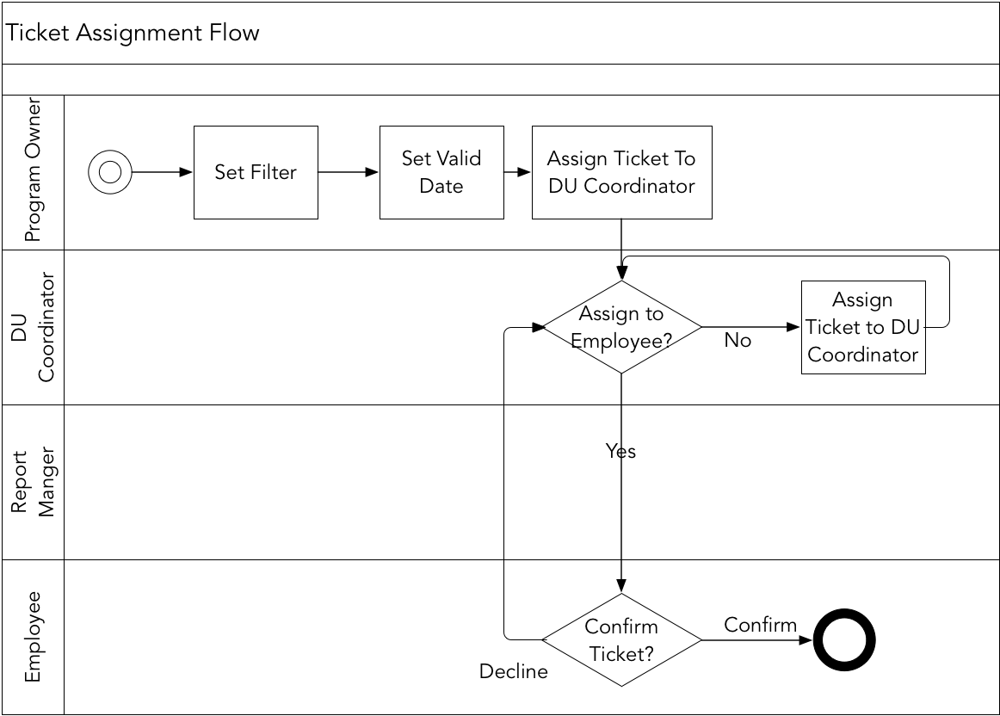
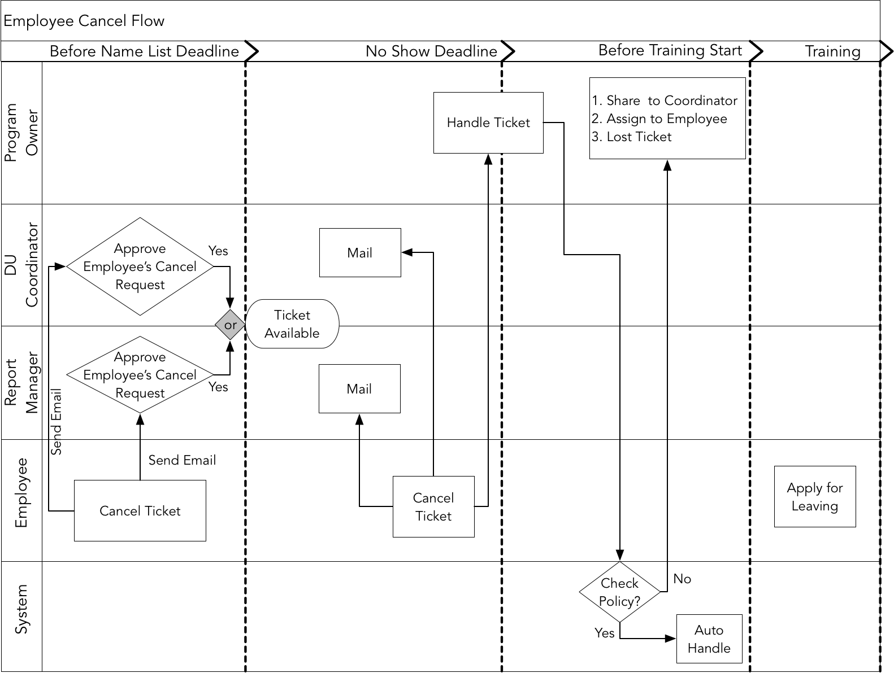
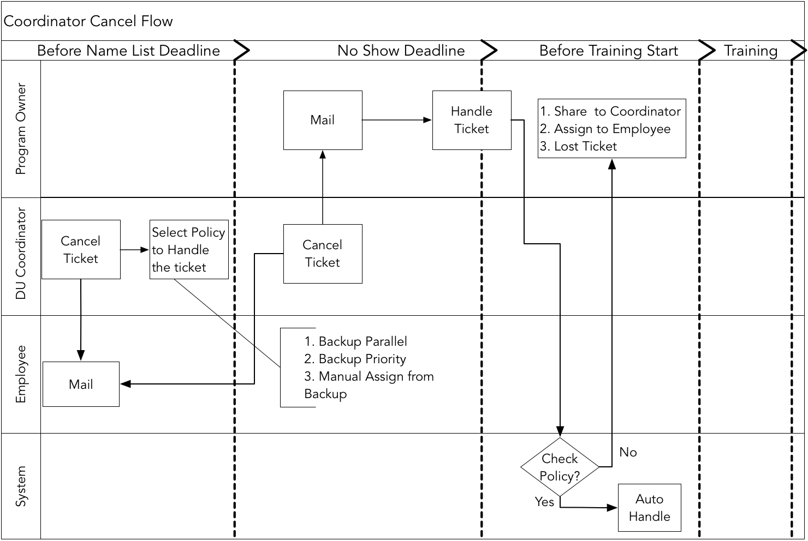
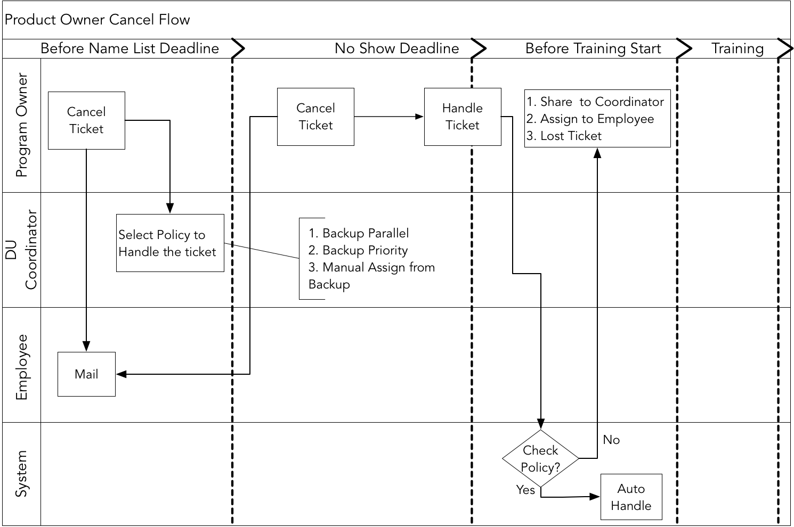

- 001 「战略篇」访谈 DDD 和微服务是什么关系？.md.html
- 002 「战略篇」开篇词：领域驱动设计，重焕青春的设计经典.md.html
- 003 领域驱动设计概览.md.html
- 004 深入分析软件的复杂度.md.html
- 005 控制软件复杂度的原则.md.html
- 006 领域驱动设计对软件复杂度的应对（上）.md.html
- 007 领域驱动设计对软件复杂度的应对（下）.md.html
- 008 软件开发团队的沟通与协作.md.html
- 009 运用领域场景分析提炼领域知识（上）.md.html
- 010 运用领域场景分析提炼领域知识（下）.md.html
- 011 建立统一语言.md.html
- 012 理解限界上下文.md.html
- 013 限界上下文的控制力（上）.md.html
- 014 限界上下文的控制力（下）.md.html
- 015 识别限界上下文（上）.md.html
- 016 识别限界上下文（下）.md.html
- 017 理解上下文映射.md.html
- 018 上下文映射的团队协作模式.md.html
- 019 上下文映射的通信集成模式.md.html
- 020 辨别限界上下文的协作关系（上）.md.html
- 021 辨别限界上下文的协作关系（下）.md.html
- 022 认识分层架构.md.html
- 023 分层架构的演化.md.html
- 024 领域驱动架构的演进.md.html
- 025 案例 层次的职责与协作关系（图文篇）.md.html
- 026 限界上下文与架构.md.html
- 027 限界上下文对架构的影响.md.html
- 028 领域驱动设计的代码模型.md.html
- 029 代码模型的架构决策.md.html
- 030 实践 先启阶段的需求分析.md.html
- 031 实践 先启阶段的领域场景分析（上）.md.html
- 032 实践 先启阶段的领域场景分析（下）.md.html
- 033 实践 识别限界上下文.md.html
- 034 实践 确定限界上下文的协作关系.md.html
- 035 实践 EAS 的整体架构.md.html
- 036 「战术篇」访谈：DDD 能帮开发团队提高设计水平吗？.md.html
- 037 「战术篇」开篇词：领域驱动设计的不确定性.md.html
- 038 什么是模型.md.html
- 039 数据分析模型.md.html
- 040 数据设计模型.md.html
- 041 数据模型与对象模型.md.html
- 042 数据实现模型.md.html
- 043 案例 培训管理系统.md.html
- 044 服务资源模型.md.html
- 045 服务行为模型.md.html
- 046 服务设计模型.md.html
- 047 领域模型驱动设计.md.html
- 048 领域实现模型.md.html
- 049 理解领域模型.md.html
- 050 领域模型与结构范式.md.html
- 051 领域模型与对象范式（上）.md.html
- 052 领域模型与对象范式（中）.md.html
- 053 领域模型与对象范式（下）.md.html
- 054 领域模型与函数范式.md.html
- 055 领域驱动分层架构与对象模型.md.html
- 056 统一语言与领域分析模型.md.html
- 057 精炼领域分析模型.md.html
- 058 彩色 UML 与彩色建模.md.html
- 059 四色建模法.md.html
- 060 案例 订单核心流程的四色建模.md.html
- 061 事件风暴与业务全景探索.md.html
- 062 事件风暴与领域分析建模.md.html
- 063 案例 订单核心流程的事件风暴.md.html
- 064 表达领域设计模型.md.html
- 065 实体.md.html
- 066 值对象.md.html
- 067 对象图与聚合.md.html
- 068 聚合设计原则.md.html
- 069 聚合之间的关系.md.html
- 070 聚合的设计过程.md.html
- 071 案例 培训领域模型的聚合设计.md.html
- 072 领域模型对象的生命周期-工厂.md.html
- 073 领域模型对象的生命周期-资源库.md.html
- 074 领域服务.md.html
- 075 案例 领域设计模型的价值.md.html
- 076 应用服务.md.html
- 077 场景的设计驱动力.md.html
- 078 案例 薪资管理系统的场景驱动设计.md.html
- 079 场景驱动设计与 DCI 模式.md.html
- 080 领域事件.md.html
- 081 发布者—订阅者模式.md.html
- 082 事件溯源模式.md.html
- 083 测试优先的领域实现建模.md.html
- 084 深入理解简单设计.md.html
- 085 案例 薪资管理系统的测试驱动开发（上）.md.html
- 086 案例 薪资管理系统的测试驱动开发（下）.md.html
- 087 对象关系映射（上）.md.html
- 088 对象关系映射（下）.md.html
- 089 领域模型与数据模型.md.html
- 090 领域驱动设计对持久化的影响.md.html
- 091 领域驱动设计体系.md.html
- 092 子领域与限界上下文.md.html
- 093 限界上下文的边界与协作.md.html
- 094 限界上下文之间的分布式通信.md.html
- 095 命令查询职责分离.md.html
- 096 分布式柔性事务.md.html
- 097 设计概念的统一语言.md.html
- 098 模型对象.md.html
- 099 领域驱动设计参考过程模型.md.html
- 100 领域驱动设计的精髓.md.html
- 101 实践 员工上下文的领域建模.md.html
- 102 实践 考勤上下文的领域建模.md.html
- 103 实践 项目上下文的领域建模.md.html
- 104 实践 培训上下文的业务需求.md.html
- 105 实践 培训上下文的领域分析建模.md.html
- 106 实践 培训上下文的领域设计建模.md.html
- 107 实践 培训上下文的领域实现建模.md.html
- 108 实践 EAS 系统的代码模型.md.html
- 109 后记：如何学习领域驱动设计.md.html
- 捐赠
104 实践 培训上下文的业务需求
在开始 EAS 系统的设计与开发之后，客户的需求又引入了培训功能，希望通过培训提高开发人员的技能水平。由于培训业务相对独立，因而为其单独建立了培训上下文（Training Context）。这个独立的培训上下文牵涉到相对复杂的业务流程与业务规则，非常适合用于描述完整的领域建模过程。因此，从本章开始，我将完整介绍培训上下文的业务需求，并利用事件风暴结合场景驱动设计和测试驱动开发，完整地展示该上下文领域分析建模、领域设计建模和领域实现建模的过程。
业务需求
培训的目的是为了提高员工的技能水平，需要根据员工的职业规划与企业发展制定培训计划（Training Plan），开展培训。培训的整个管理由人力资源部的培训专员（Program Owner）负责。在培训流程中，除了培训专员，还牵涉到部门协调者（DU Coordinator）、员工主管（Report Manager）和员工（Employee）本人。
业务流程
系统将分配给员工的培训机会称之为票（Ticket），这实际上是领域概念的一种隐喻。培训专员发起培训的过程，实际上就是分配票的过程，整个流程如下图所示：

培训专员在分配票之前，会事先设定过滤器和有效日期。过滤器主要用于过滤员工名单，获得一个与该培训相匹配的培训提名（Nomination）候选名单。培训专员设置的有效日期主要用于判断票的有效期限。培训专员会将票分配给部门协调者，再由部门协调者将票分配给员工。员工在收到培训邮件后，可以选择“确认”或“拒绝”，若员工拒绝了分配的票，票会退回给部门协调者，由部门协调者对票进行再分配。
在发起培训开始，到培训结束，一共有四个重要的截止时间（Deadline）：
- 提名截止时间（Name List Deadline）
- 缺席截止时间（No Show Deadline）
- 培训开始前（Before Training Start）
- 培训期间（Training）
在不同的截止日期，员工取消（Cancel）票的流程都不一样，处理票的规则也不相同：

在提名截止时间之前，员工可以取消票。取消后，系统会分别发送邮件给部门协调者与员工主管，只要任意一人批准了该取消请求，就认为取消成功，该票又会恢复到可用状态。在缺席截止时间之前，员工可以取消票。取消后，系统会发送邮件通知部门协调者和员工主管，但无需他们审批，而是直接由培训专员负责处理该票。处理票时，会先检查分配该票时设置的活动（Action）策略，要么由系统自动处理，要么由培训专员处理该票。处理票有三种活动策略：
- 将票分享给别的协调者（Share to Coordinator）
- 分配给员工（Assign to Employee）
- 让票作废（Lost Ticket）
在培训开始前，不允许员工再显式地取消票。如果员工在收到票后一直未确认，系统会检查分配该票时设置的策略，要么由系统自动处理，要么由培训专员处理该票，处理票的策略与前相同。一旦培训开始后，就不再允许员工取消票，如果有事未能出席，应提交请假申请。
部门协调者在将票分配给员工后，也可以取消已经分配出去的票。不同截止日期的取消流程不同，如下图所示：

部门协调者取消票的流程与员工取消票的流程比较相似，不同之处在于取消票时无需审批，直接就可处理。在报名截止日期之间，处理票的策略有三种：
- 提名备选名单竞争票，即先到先得（Backup Parallel）
- 按照提名备选名单的优先级自动分配票（Backup Priority）
- 手动从提名备选名单中选择（Manual Assign from Backup）
这里的提名备选名单（Backup）就是之前设置过滤器生成的提名候选名单中，剔除掉已经被提名的员工列表。
培训专员也可以取消票，流程如下图所示：

该执行流程与部门协调者取消票的流程几乎完全相同，这里不再赘述。
培训期间，每个参与培训的员工都要签到（Checkin）。培训结束后，系统会比较培训提名名单与出勤记录，由此可以获得缺席（No Show）列表。培训专员确认了缺席列表后，会根据黑名单规则确定是否将该员工放入到黑名单（Black List）中。若员工被列入到培训黑名单，在将来就不会再出现在培训候选名单中，除非又被移出了黑名单。流程如下图所示：
票的状态
显然，分配票的业务流程相对简单，复杂之处在于取消票的流程，不同阶段不同角色的取消操作会产生不同的结果，从而带来票状态的变更。在分析业务需求时，梳理票状态的变更很有必要。票的状态迁移以及触发状态迁移的动作如下图所示：
票在分配给员工后，状态为“等待确认（WaitForConfirm）”。若员工一直不确认，当时间到达培训专员截止时间（PO Deadline）时，状态就变更为“截止（Deadline）”。若员工拒绝，状态变更为“已拒绝（Declined）”，否则就确认为“已注册（Enrolled）”状态。在该状态下，若培训专员确认，状态变更为“已确认（Confirmed）”状态。若票已确认，而员工未参与培训，又或者在缺席截止时间之后取消，状态置为“缺席（NoShow）”，若正常参加培训，最后状态为“关闭（Closed）”。
在缺席截止时间之前，若票的状态为“等待确认（WaitForConfirm）”，那么培训专员、部门协调者与员工主管都可以取消票，状态变更为“已取消（Cancelled）”。在“已注册（Enrolled）”或“已确认（Confirmed）”状态下，只要当前时间在培训专员截止时间之前，培训专员、部门协调者与员工主管也可以取消票；员工自己也可以取消，但状态会变更为“等待审批（WaitForApprove）”。此时，倘若部门协调者或员工主管不批准，则票的状态变更为“已确认（Confirmed）”，如果批准了，又或者在24小时内没有执行任何操作，状态就变更为“已取消（Cancelled）”。处于“已取消（Cancelled）”状态的票如果被再分配（reassign），就会重新回到起点——“等待确认（WaitForConfirm）”，否则认为该票作废，状态为“作废（Lost）”。
设置有效日期和活动策略
有效日期（Valid Date）的设置与系统自动触发的活动有关，直接影响了培训流程。通常，在创建一个培训（Training）时，系统会自动将培训的开始时间作为其中一个系统类型的有效日期。同时，系统会为培训专员创建两个系统类型的有效日期：
- 缺席截止时间（No Show Deadline）
- 培训专员截止时间（Program Owner Deadline）
系统还为部门协调者创建一个系统类型的有效日期：主管截止时间（Manager Deadline），用户也可以添加自定义的有效日期。在添加有效日期时，除了可以指定日期和时间之外，还可以定义日期时间的计算公式。
在设置了有效日期之后，用户还可以设置当有效日期满足条件会触发的活动（Action）策略。活动策略包括：
- 发送邮件提醒（Send email to remind）
- 在公告栏上显示提醒（Show remind in portal）
- 从提名备选名单中分配票（Find backup）
- 先到先得（Backup Parallel）
- 优先级（Backup Priority）
- 手动选择（Reassign by Manually）
- 让票作废（Lost Ticket）
除了可以为有效日期设置处理票的活动策略之外，在培训专员或其他角色分配票时也可以设置这些活动，作为取消票时对票的处理策略。
确定关键概念的统一语言
培训上下文的业务需求在一些领域概念上存在模糊不清的定义，需要为它们确定统一语言，以扫清领域建模工作的障碍。
对于培训票（Ticket），培训专员可以将票“分配”给部门协调者，部门协调者在得到票后，又可以将票再“分配”给别的协调者，也可以将票直接“分配”给员工。虽然都是在“分配”票，含义却完全不同。为避免这两个概念的混淆，可以将票直接分配给员工的操作视为对员工的提名（Nomination）。于是明确了如下概念：
- 分配票给协调者（Assign ticket to coordinator）：获得票的员工为协调者，并非参加培训的员工
- 提名员工（Nominate employee）：意味着将票分给员工，使得他具备了参加培训的资格
对于部门的员工而言，在不同场景也具有不同的身份，体现了员工与培训的不同关系：
- 候选人（Candidate）：利用过滤器删选或直接添加的员工，都是培训的候选人。这些候选人具备被培训专员或协调者提名参加培训的资格，但并不意味着候选人已经被提名了。
- 被提名人（Nominee）：指获得培训票要求参加培训的员工，即被提名的对象。
- 备选人（Backup）：提名候选名单中剔除掉已经被提名的员工列表。
- 学员（Trainee）：被提名人在收到培训票后确认参加，就会成为该培训的学员。
© 2019 - 2023 Liangliang Lee. Powered by gin and hexo-theme-book.